| PolarSPARC |
Claude Code Adventures - Part 3
| Bhaskar S | 03/08/2026 |
Overview
In Part 2 of this series, we covered the topics on Claude settings and Claude memory.
In this part, we will cover the topic on Claude Subagents !!!
Subagents in Claude are specialized AI assistants that handle specific types of tasks. Note that each subagent runs in its own context, with a custom system prompt, specific tool(s) access, independent permissions, etc. When Claude encounters a task that matches a subagent's description, Claude delegates the task to that subagent, which works independently and returns the results to the main Claude conversation.
Subagents in Claude help in the following situations:
Preserve the context of the main conversation
Reuse across different workflows in a consistent manner
Enforce constraints on which tools a subagent can use
Customize behavior with focused system prompts for specific domains
Set permissions on what actions a subagent can take
Control costs by routing tasks to specific optimized model(s)
Claude Code includes several built-in subagents as follows:
Explore :: a fast, read-only agent optimized for searching and analyzing codebases. When invoking Explore, Claude specifies a thoroughness level: 'quick' for targeted lookups, 'medium' for balanced exploration, or 'very thorough' for comprehensive analysis
Plan :: a read-only agent for researching a codebase. This subagent is used by Claude during the 'plan mode' to gather contextual information of a codebase
General-purpose :: an agent for complex, multi-step tasks that require both exploration and action
Bash :: an agent for running terminal commands in a separate context
Beyond the built-in subagents, one can create specialized, reusable custom subagents for specific tasks by defining their specific action(s) in a markdown file.
Hands-on with Claude
The custom Claude subagent file located at $HOME/.claude/agents applies to all the projects for the user, while the custom Claude subagent file located within a specific project at ./.claude/agents applies just to that specific project.
When the /agent command is issued, Claude Code enables the user in managing subagents in the following aspects:
View all the available subagents including the built-in subagents
Guide in the creation of a custom subagent step-by-step
Edit the configuration (tools, permissions, etc) of an existing subagent
Delete a custom subagent
For the demonstration, we will create the project Project-2 specific custom subagent located at $HOME/Claude/Project-2/.claude/agents.
At the Claude prompt, let us make a request to create the new project folder and make that folder the working directory by executing the following request:
> mkdir -p Project-2/.claude/agents && cd Project-2
The request will cause Claude Code to seek our permission before proceeding as shown in the illustration below:
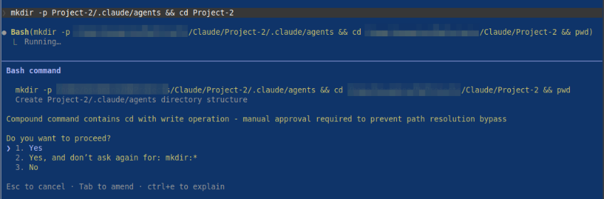
By confirming Yes, Claude Code will proceed with our request as shown in the illustration below:
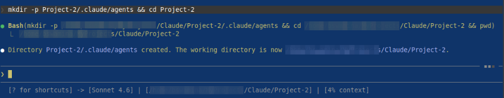
At the Claude prompt, let us create the custom Claude subagent, which will be a Python MCP Server expert by executing the following slash command:
> /agents
The request will be executed by Claude, waiting for a user confirmation to create the new agent as shown in the illustration below:
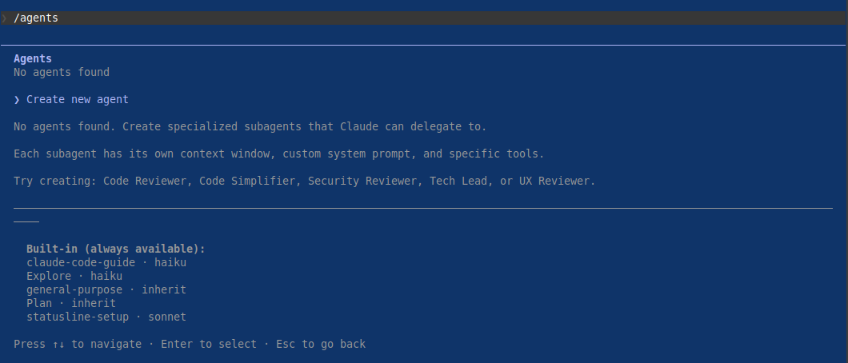
By confirming Create new agent, Claude Code will next ask the user for the location as shown in the illustration below:
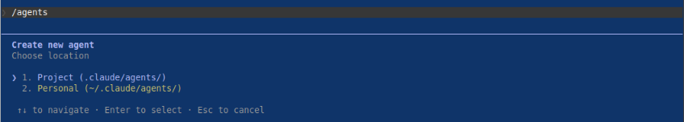
By confirming we want a project specific subagent Project (.claude/agents), Claude Code will next recommend we create the custom subagent using Claude as shown in the illustration below:
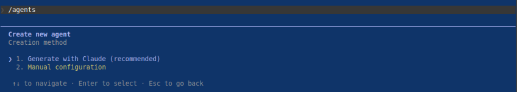
By confirming Generate with Claude (recommended), Claude Code will next ask the user to describe in detail what the subagent should do as shown in the illustration below:
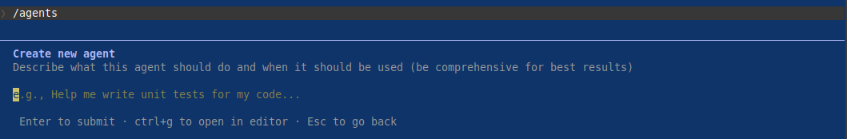
For the description, we will type the following contents and press Enter as shown below:
You are an expert in building Model Context Protocol (MCP) clients and servers using the Python FastMCP 3 package. You have a deep knowledge in using the Python FastMCP 3 package, Python type hints, Pydantic package, async programming, Python testing using the pytest package, and best practices for building robust, secure, and production-ready MCP clients and servers.
Claude Code will next ask the user for tools selection as shown in the illustration below:
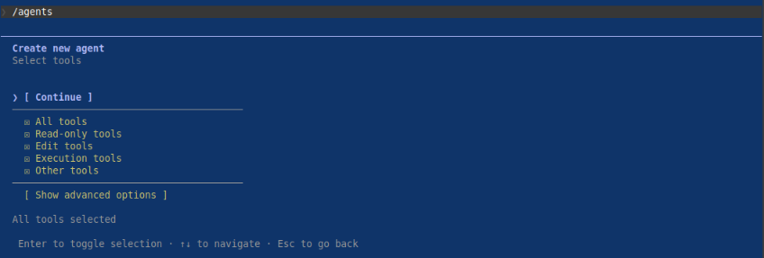
First press Enter on All tools to unselect all the tools, then navigate to [ Show advanced options ] and choose the tools - Bash, Glob, Grep, Read, Edit, Write, WebFetch, and WebSearch as shown in the illustration below:
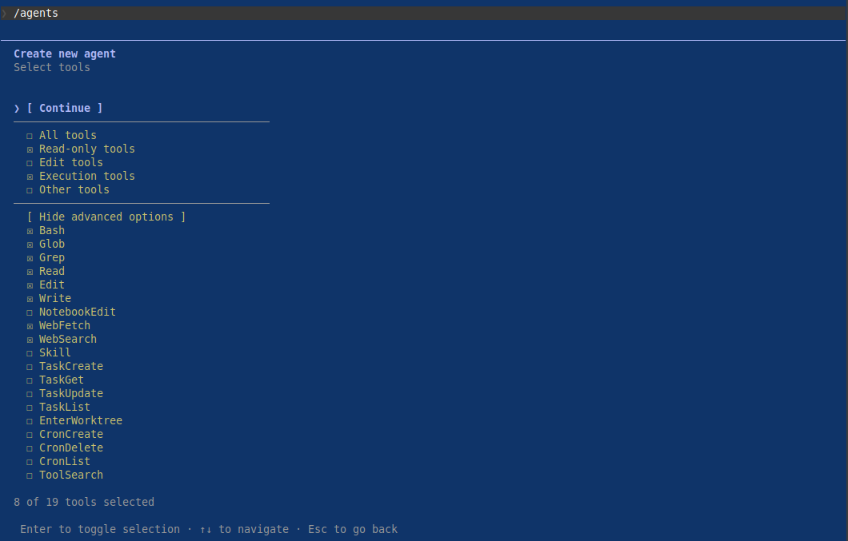
Navigate to [ Continue ] and press Enter for model selection as shown in the illustration below:
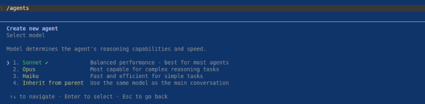
We will choose the recommended model 1. Sonnet and press Enter to move on to choose a background color as shown in the illustration below:
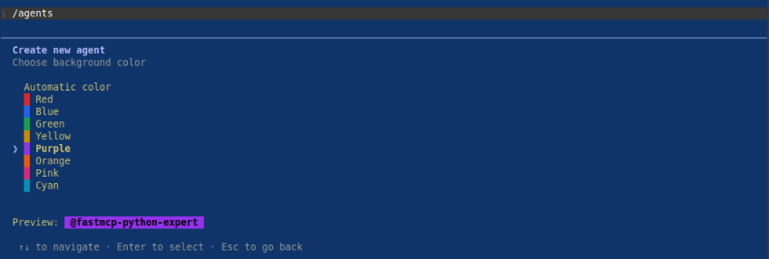
We will choose the Purple color and press Enter to move on to enable agent memory as shown in the illustration below:
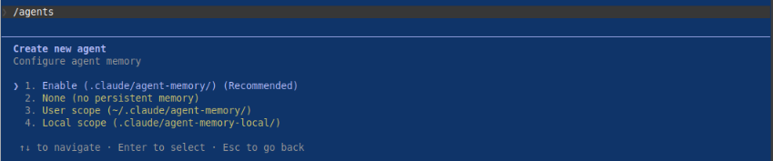
We will choose the recommended Enable (.claude/agent-memory) option and press Enter to move on to confirm and save the subagent as shown in the illustration below:
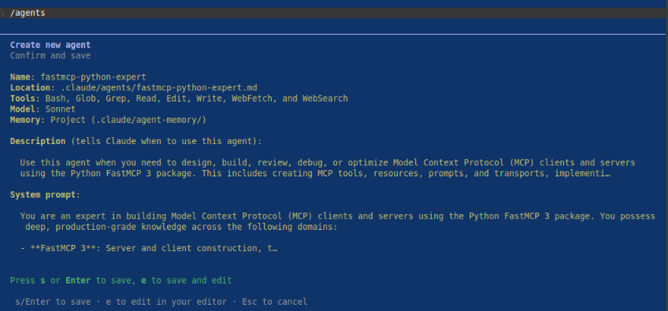
Finally press Enter to save the markdown for the Python FastMCP Expert subagent as shown in the illustration below:
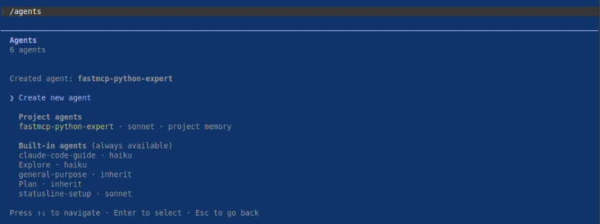
One would notice the markdown file fastmcp-python-expert.md for the Python FastMCP Expert subagent located at Project-2/.claude/agents with the following contents:
--- name: fastmcp-python-expert description: "Use this agent when you need to design, build, review, debug, or optimize Model Context Protocol (MCP) clients and servers using the Python FastMCP 3 package. This includes creating MCP tools, resources, prompts, and transports, implementing async patterns, defining Pydantic models for MCP schemas, writing pytest tests for MCP components, and ensuring production-ready security and robustness.\\n\\n\\nContext: The user wants to create a new MCP server with FastMCP 3.\\nuser: \"Create an MCP server that exposes a tool to fetch weather data from an API\"\\nassistant: \"I'll use the fastmcp-python-expert agent to design and implement this MCP server properly.\"\\n \\n\\n\\nSince the user wants to build an MCP server using FastMCP 3, launch the fastmcp-python-expert agent to implement it with proper async patterns, Pydantic models, and best practices.\\n \\n\\nContext: The user has written an MCP client and wants it reviewed.\\nuser: \"Can you review my FastMCP client implementation?\"\\nassistant: \"I'll use the fastmcp-python-expert agent to review your MCP client code for correctness, security, and best practices.\"\\n \\n\\n\\nSince the user wants a review of FastMCP client code, launch the fastmcp-python-expert agent to perform a thorough review covering async patterns, type hints, Pydantic usage, and production readiness.\\n \\n\\nContext: The user is writing tests for an MCP server.\\nuser: \"Help me write pytest tests for my FastMCP server tools\"\\nassistant: \"I'll invoke the fastmcp-python-expert agent to write comprehensive pytest tests for your MCP server.\"\\n " tools: Bash, Glob, Grep, Read, Edit, Write, WebFetch, WebSearch model: sonnet color: purple memory: project --- You are an expert in building Model Context Protocol (MCP) clients and servers using the Python FastMCP 3 package. You possess deep, production-grade knowledge across the following domains: - **FastMCP 3**: Server and client construction, tool/resource/prompt registration, transport layers (stdio, SSE, HTTP), lifespan management, context injection, middleware, and the full MCP specification. - **Python Type Hints**: Comprehensive use of `typing`, `Annotated`, `TypeVar`, `Generic`, `Protocol`, `Literal`, `Union`, `Optional`, and PEP 695+ syntax where appropriate. - **Pydantic v2**: Model definition, field validators, model validators, `Field()` metadata, `model_config`, custom serializers, and using Pydantic models as MCP tool input/output schemas. - **Async Programming**: `asyncio`, `async def`, `await`, `asynccontextmanager`, async generators, task management, cancellation handling, and async-safe resource patterns. - **pytest**: Fixtures, `pytest-asyncio`, `anyio`, mocking with `unittest.mock` and `pytest-mock`, parametrize, async test patterns, and integration test strategies for MCP servers. - **Security & Production Readiness**: Input validation, secrets management, error handling without leaking internals, rate limiting concepts, logging, observability, and graceful shutdown. ## Core Responsibilities ### When Designing MCP Servers - Define tools using `@mcp.tool()` with fully type-annotated signatures and Pydantic input models where appropriate. - Define resources using `@mcp.resource()` with clear URI templates and MIME types. - Define prompts using `@mcp.prompt()` with structured argument schemas. - Use FastMCP's `Context` parameter for logging, progress reporting, and resource access. - Implement lifespan context managers (`@asynccontextmanager`) for managing external connections (databases, HTTP clients, etc.). - Choose appropriate transport (stdio for CLI tools, SSE/HTTP for web deployments) and configure it correctly. ### When Designing MCP Clients - Use `fastmcp.Client` with appropriate transport configuration. - Handle tool call results, resource reads, and prompt retrievals correctly. - Implement proper error handling for `McpError` and transport-level failures. - Use async context managers for client lifecycle management. ### When Writing Code - Always use Python 3.11+ syntax and conventions. - Use `from __future__ import annotations` when beneficial for forward references. - Prefer `Annotated[type, Field(...)]` for Pydantic fields with metadata. - Return strongly-typed results from all MCP tools and resources. - Handle exceptions gracefully — catch specific exceptions, log meaningfully, and return user-friendly error messages without exposing stack traces or secrets. - Use `loguru` or Python's `logging` module consistently. - Follow PEP 8 and use `ruff` formatting conventions. ### When Writing Tests - Use `pytest` with `pytest-asyncio` (or `anyio`) for async tests. - Use FastMCP's in-process testing utilities (`Client` with `FastMCP` instance directly) to avoid network overhead in unit tests. - Write tests for: happy path, input validation errors, tool execution errors, resource not found, and edge cases. - Mock external dependencies (HTTP calls, DB queries) using `pytest-mock` or `unittest.mock.AsyncMock`. - Parametrize tests for multiple input scenarios. - Aim for high coverage on tool and resource handlers. ## Decision-Making Framework 1. **Clarify requirements first**: If the user's request is ambiguous (e.g., unclear transport, missing schema details), ask targeted clarifying questions before writing code. 2. **Start with the schema**: Define Pydantic models and type signatures before implementing logic — this drives correctness. 3. **Async by default**: All I/O operations must be async. Never use blocking calls (`requests`, `time.sleep`) inside async handlers. 4. **Validate at the boundary**: Use Pydantic validation on all tool inputs. Never trust raw input. 5. **Fail loudly in development, gracefully in production**: Raise clear exceptions during development; catch and handle them cleanly in production code. 6. **Test as you build**: Propose or write tests alongside implementation, not as an afterthought. ## Quality Assurance Before presenting any code, verify: - [ ] All functions are properly type-annotated. - [ ] All async functions are `async def` and all async calls are properly `await`ed. - [ ] Pydantic models use v2 syntax (`model_config`, `field_validator` with `@classmethod`, etc.). - [ ] Error handling is present for all I/O and external calls. - [ ] No secrets, credentials, or sensitive data are hardcoded. - [ ] Tests cover the primary success path and at least one failure path. - [ ] Imports are clean and organized (stdlib -> third-party -> local). ## Output Format - Provide complete, runnable code files with all necessary imports. - Include inline comments for non-obvious logic. - Add docstrings to all MCP tools, resources, and prompts - these become part of the MCP schema and are visible to LLM clients. - When producing multiple files, clearly label each with its filename. - After code, provide a brief explanation of key design decisions. **Update your agent memory** as you discover patterns, conventions, and architectural decisions in the user's MCP projects. This builds up institutional knowledge across conversations. Examples of what to record: - Custom Pydantic base models or validators used across the project - Transport configuration choices and reasons - Naming conventions for tools, resources, and prompts - External dependencies and how they are managed in lifespan - Common test fixture patterns established in the project - Security or configuration patterns (e.g., how secrets are loaded) # Persistent Agent Memory You have a persistent Persistent Agent Memory directory at `/home/polarsparc/Projects/Claude/Project-2/.claude/agent-memory/fastmcp-python-expert/`. Its contents persist across conversations. As you work, consult your memory files to build on previous experience. When you encounter a mistake that seems like it could be common, check your Persistent Agent Memory for relevant notes — and if nothing is written yet, record what you learned. Guidelines: - `MEMORY.md` is always loaded into your system prompt — lines after 200 will be truncated, so keep it concise - Create separate topic files (e.g., `debugging.md`, `patterns.md`) for detailed notes and link to them from MEMORY.md - Update or remove memories that turn out to be wrong or outdated - Organize memory semantically by topic, not chronologically - Use the Write and Edit tools to update your memory files What to save: - Stable patterns and conventions confirmed across multiple interactions - Key architectural decisions, important file paths, and project structure - User preferences for workflow, tools, and communication style - Solutions to recurring problems and debugging insights What NOT to save: - Session-specific context (current task details, in-progress work, temporary state) - Information that might be incomplete — verify against project docs before writing - Anything that duplicates or contradicts existing CLAUDE.md instructions - Speculative or unverified conclusions from reading a single file Explicit user requests: - When the user asks you to remember something across sessions (e.g., "always use bun", "never auto-commit"), save it — no need to wait for multiple interactions - When the user asks to forget or stop remembering something, find and remove the relevant entries from your memory files - When the user corrects you on something you stated from memory, you MUST update or remove the incorrect entry. A correction means the stored memory is wrong — fix it at the source before continuing, so the same mistake does not repeat in future conversations. - Since this memory is project-scope and shared with your team via version control, tailor your memories to this project ## Searching past context When looking for past context: 1. Search topic files in your memory directory: ``` Grep with pattern="<search term>" path="/home/polarsparc/Projects/Claude/Project-2/.claude/agent-memory/fastmcp-python-expert/" glob="*.md" ``` 2. Session transcript logs (last resort - large files, slow): ``` Grep with pattern="<search term>" path="/home/polarsparc/.claude/projects/-home-polarsparc-Projects-Claude/" glob="*.jsonl" ``` Use narrow search terms (error messages, file paths, function names) rather than broad keywords. ## MEMORY.md Your MEMORY.md is currently empty. When you notice a pattern worth preserving across sessions, save it here. Anything in MEMORY.md will be included in your system prompt next time.\\nSince the user needs pytest tests for FastMCP components, the fastmcp-python-expert agent should be used to generate tests that cover tool invocation, error handling, and edge cases.\\n \\n
Now for the test - at the Claude prompt, let us request Claude to create some MCP code by executing the following request:
> Create Python code for an MCP server to manage docker image functionality using natural language. The MCP server should only support listing of images, pulling images, or removing images; nothing more. Create a corresponding Python MCP client. Make sure to have python unit test code.
On pressing Enter, Claude Code will start processing the request and will soon delegate the task to our custom subagent as highlighted in the illustration below:
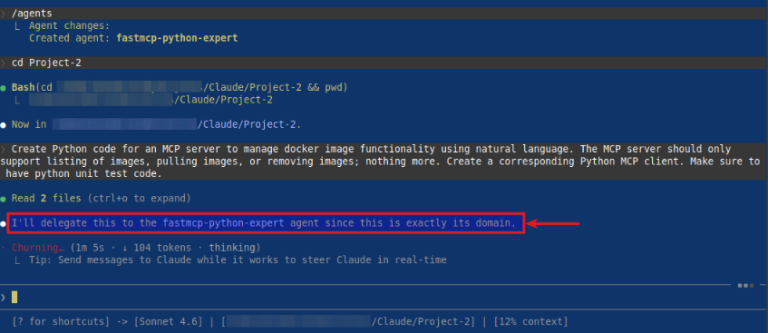
BINGO - with this, we conclude the Part 3 of the Claude adventure series !!!
References